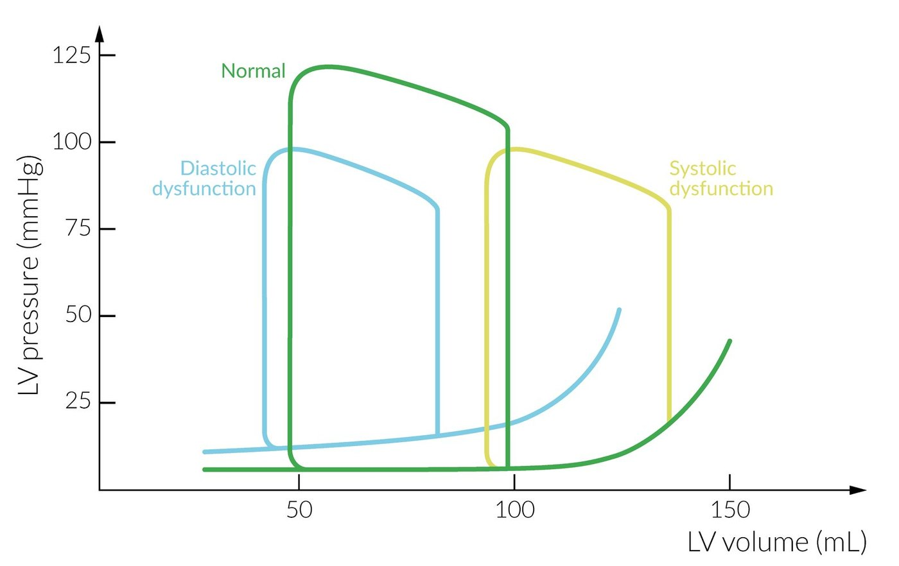
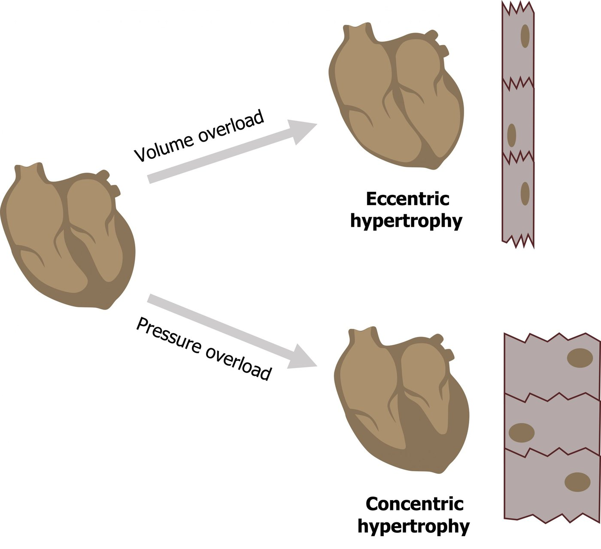
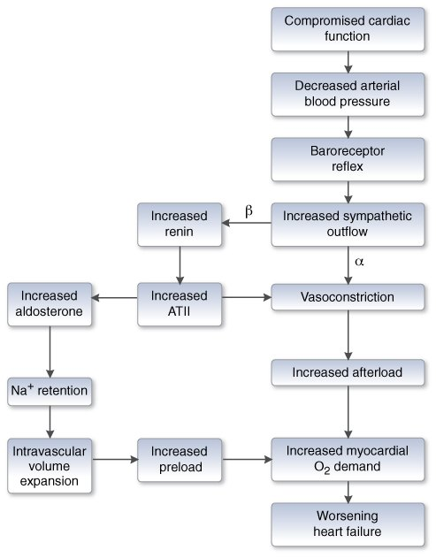
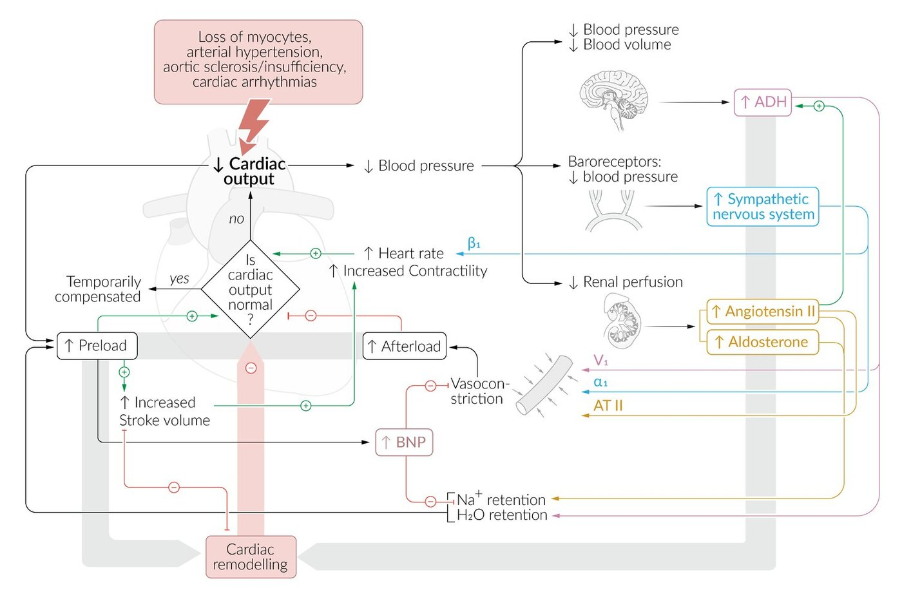

Slides 5–7 · preload, afterload, contractility, rate, remodelling · the neurohumoral cycle · edema
Why the Failing Heart Gets Worse
The determinants of cardiac function (slide 5)
| Determinant | What it is | Why it worsens HF |
|---|---|---|
| Preload | Ventricular filling | ↑ preload → ↑ myocardial O₂ demand → worse failure. Supply can't always rise to match, and less so as the disease advances. |
| Afterload | Impedance to LV ejection (the pressure the ventricle must beat to open the aortic valve) | ↑ afterload requires ↑ contractility to keep CO → ↑ O₂ demand. As the muscle weakens, SV and CO fall. |
| Contractility | Force of contraction | ↑ SV to overcome impedance, but directly ↑ O₂ demand. It is one of the first things to fail. |
| Heart rate | — | Extreme rates impair CO. |
| Remodelling | Wall stress → hypertrophy | ↓ LV compliance → worse performance. |
A stiff, hypertrophied ventricle shows the bottom (filling) limb of the PV loop kicking up: pressure rises more for each mL of filling. "Here's 4 PV loops — pick the one that demonstrates cardiac remodelling and hypertrophy" is the kind of physiology question this pharmacology rests on.


The neurohumoral cycle (slide 6)


- Compromised cardiac function → ↓ arterial pressureThe baroreceptor reflex fires.
- ↑ Sympathetic outflowAcutely, α-mediated vasoconstriction and tachycardia.
- β1 → ↑ renin → ↑ angiotensin IIAT II vasoconstricts → ↑ afterload.
- AT II → ↑ aldosterone → Na⁺ retention → volume expansion→ ↑ preload.
- ↑ afterload + ↑ preload → ↑ O₂ demand → worsening failureA spiral: the compensation progresses the disease.
Why the patient swells (slide 7)
- Atrial stretch should release ANP ("try to make you pee") to cut preload. But chronically dilated atria resist natriuretic peptide, so the response fails.
- The kidney still senses low pressure and keeps reabsorbing Na⁺ and water. Hydrostatic pressure rises, fluid transudates into tissue (pulmonary and peripheral edema), pressure drops again, and the kidney reabsorbs more.

Q: Trace how β1 stimulation in a failing heart ends up increasing both afterload and preload.
β1 on juxtaglomerular cells → ↑ renin → ↑ AT II → vasoconstriction (↑ afterload) and ↑ aldosterone → Na⁺/water retention (↑ preload). Both raise O₂ demand and worsen the failure.
Q: Why doesn't the natriuretic-peptide system rescue a patient with chronic HF?
Chronically dilated chambers become resistant to natriuretic peptide, so the kidney keeps reabsorbing Na⁺ despite volume overload.